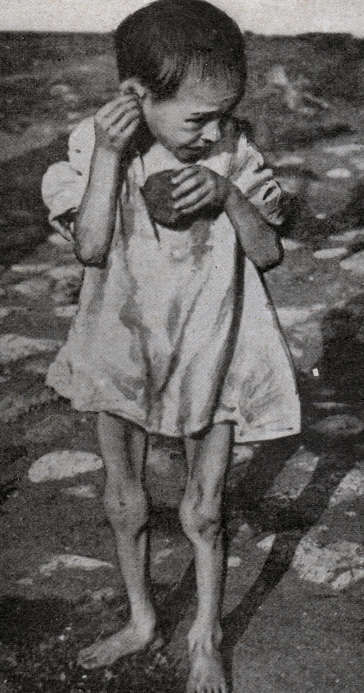

Stages of Food Security
According to Reports, Food Security has two stages:Starvation: Starvation is a severe deficiency in caloric energy intake, below the level needed to maintain an organism's life. It is the most extreme form of malnutrition and can cause permanent organ damage and eventually, death.

- Population Growth: The increasing human population can put strain on resources, leading to scarcity and subsequently starvation.
- Climate Change: Extreme weather events like droughts, floods, and hurricanes can significantly disrupt agricultural production and lead to food scarcity.
- Natural Disasters: Earthquakes, volcanic eruptions, and tsunamis can damage infrastructure and farmland, resulting in reduced food production and access.
- Conflicts and Political Instability: Wars, terrorism, and civil unrest can disrupt trade routes, destroy crops, and create instability in markets.
- Policy Failures: Misguided government policies and inadequate food security strategies can exacerbate food insecurity and starvation.
- Social Exclusion: Discrimination, poverty, and social marginalization can make it difficult for vulnerable groups to access adequate food, contributing to malnutrition and starvation.
- Uneven Distribution: Inadequate and inequitable distribution of food can result in starvation, especially in regions where access to food is limited.
- Structural Causes: Globalization, monoculture farming, and dependence on export crops can reduce local food production and security.
-
Famine : A famine is a widespread scarcity of food, caused by several factors including war, natural disasters, crop failure, widespread poverty causing widespread death.
- Drought and lack of water can cause food shortages, especially for crop farmers. This is because the water scarcity leads to lower crop yields.
- Crop failure due to extreme weather conditions like floods, heavy rains, or high temperatures can also result in food insecurity. This is because the destroyed crops cannot be replaced quickly, leaving people without their main source of food.
- Wars, political instability, and conflict can disrupt agricultural activities, which may result in reduced food production and subsequent food insecurity.
- Inadequate transportation and communication systems can hinder the movement of food supplies from producers to consumers. This can exacerbate food shortages in affected areas.
- Pest infestations, diseases, and environmental factors such as salinity and erosion can all impact crop yields and lead to food shortages.
- Lack of investment in agriculture and poor management of natural resources can also contribute to food insecurity.
- Malnutrition, lack of proper diet, and insufficient food availability can further exacerbate food security issues.
In conclusion, combating famine and improving food security require a multidisciplinary and collaborative approach. By investing in and prioritizing these sectors, it is possible to develop effective and sustainable solutions to reduce hunger and malnutrition in affected populations.
*The most devastating famine that occurred in India was the FAMINE OF BENGAL in 1943. This famine killed 30,00,000 people in the province of Bengal.
The agricultural labourers, fishermen, transport workers and other casual labourers were affected the most by dramatically increasing price of rice.